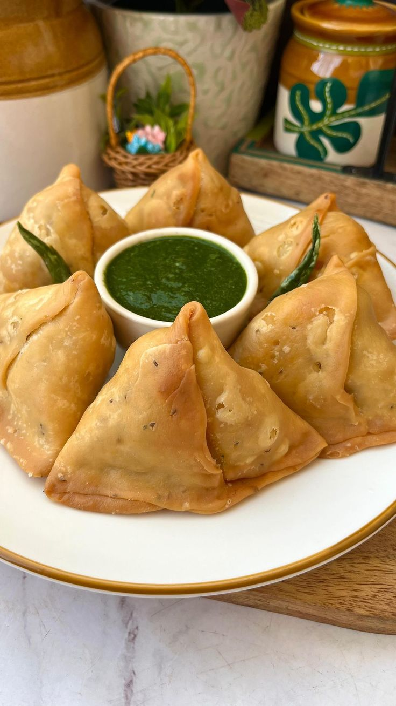

Samosa

Ingredients
- 2 cups All-purpose Flour (Maida)
- 4 tbsp Oil or Ghee (for dough)
- Water (for kneading)
- Salt to taste
- Oil (for frying)
- Filling:
- 3 Boiled Potatoes (mashed)
- ½ cup Peas
- 1 tsp Cumin Seeds
- 1 tsp Garam Masala
- 1 tsp Coriander Powder
- ½ tsp Red Chili Powder
- Salt to taste
- 1 tbsp Oil
Instructions
- Mix flour, salt, and ghee. Add water gradually to make a firm dough. Rest 20 mins.
- Heat oil, add cumin, peas, and mashed potatoes. Add spices and mix well. Cool it down.
- Roll dough, cut into halves, shape into cones, and fill with potato mixture. Seal edges.
- Deep fry samosas on medium heat until golden brown. Serve hot with chutney.
Pakora

Ingredients
- 1 cup Gram Flour (Besan)
- 1 Onion (sliced)
- 1 Potato (thinly sliced)
- 1 Green Chili (chopped)
- ½ tsp Turmeric
- ½ tsp Red Chili Powder
- 1 tsp Carom Seeds (Ajwain)
- Salt to taste
- Water (to make batter)
- Oil (for deep frying)
Instructions
- In a bowl, mix besan, spices, and salt. Add water to form a thick batter.
- Add sliced onions, potatoes, and green chili. Mix well.
- Heat oil and drop spoonfuls of mixture. Fry until golden and crispy.
- Drain excess oil and serve with mint or tamarind chutney.
Bhel Puri
Ingredients
- 2 cups Puffed Rice (Murmura)
- ¼ cup Sev
- 1 Boiled Potato (chopped)
- 1 Tomato (chopped)
- 1 Onion (chopped)
- 2 tbsp Green Chutney
- 2 tbsp Tamarind Chutney
- 1 tsp Chaat Masala
- Salt to taste
- Coriander leaves for garnish
- 1 tbsp Lemon Juice
Instructions
- In a large bowl, combine puffed rice, chopped veggies, boiled potato, and chutneys.
- Add chaat masala, salt, and lemon juice. Toss everything well.
- Top with sev and coriander. Serve immediately for a crunchy texture.